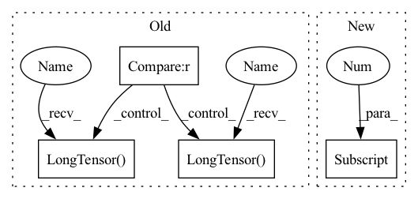

Pattern ID :17534
Before Change
self.beams_buf = None
def _init_buffers(self, t):
if self.scores_buf is None :
self.scores_buf = t.new()
self.indices_buf = torch.LongTensor() .to(device=t.device)
self.beams_buf = torch.LongTensor() .to(device=t.device)
def step(self, step, lprobs, scores):
Take a single search step.After Change
@torch.jit.export
def _init_buffers(self, t):
if not self.scores_buf.size()[0] :
self.scores_buf = torch.empty(0).to(t)
self.indices_buf = torch.empty(0).to(t).long()
self.beams_buf = torch.empty(0).to(t).long()In pattern: SUPERPATTERN
Frequency: 3
Non-data size: 4
Instances Fragment ID: 58012273
Project Name: kssteven418/i-bert
Commit Name: fba10af9db5edd61f78ccdb9d115c4eafbcc561d
Time: 2020-02-14
Author: chenliu8@fb.com
File Name: fairseq/search.py
M Class Name: Search
N Class Name: Search
M Method Name: _init_buffers(2)
N Method Name: _init_buffers(2)
M Parent Class: nn.Module
N Parent Class: object
M File Name: fairseq/search.py
N File Name: fairseq/search.py
M Start Line: 23
M End Line: 26
N Start Line: 26
N End Line: 29
Before Change
self.beams_buf = None
def _init_buffers(self, t):
if self.scores_buf is None :
self.scores_buf = t.new()
self.indices_buf = torch.LongTensor() .to(device=t.device)
self.beams_buf = torch.LongTensor() .to(device=t.device)
def step(self, step, lprobs, scores):
Take a single search step.After Change
@torch.jit.export
def _init_buffers(self, t):
if not self.scores_buf.size()[0] :
self.scores_buf = torch.empty(0).to(t)
self.indices_buf = torch.empty(0).to(t).long()
self.beams_buf = torch.empty(0).to(t).long() Fragment ID: 58012272
Project Name: mohammadkhalifa/fairseq-tagging
Commit Name: fba10af9db5edd61f78ccdb9d115c4eafbcc561d
Time: 2020-02-14
Author: chenliu8@fb.com
File Name: fairseq/search.py
M Class Name: Search
N Class Name: Search
M Method Name: _init_buffers(2)
N Method Name: _init_buffers(2)
M Parent Class: nn.Module
N Parent Class: object
M File Name: fairseq/search.py
N File Name: fairseq/search.py
M Start Line: 23
M End Line: 26
N Start Line: 26
N End Line: 29
Before Change
for path in key_list:
transcript = self.path_to_transcript_dict[path]
wave, sr = sf.read(os.path.join("Corpora/CSS10/", path))
if 50000 < len(wave) < 230000 :
print("processing {}".format(path))
if ap is None:
ap = AudioPreprocessor(input_sr=sr, output_sr=16000, melspec_buckets=80, hop_length=256, n_fft=1024)
self.cached_text.append(tf.string_to_tensor(transcript).long())
self.cached_text_lens.append(torch.LongTensor( [len(self.cached_text[-1])]) )
self.cached_speech.append(ap.audio_to_mel_spec_tensor(wave).transpose(0, 1))
self.cached_speech_lens.append(torch.LongTensor( [len(self.cached_speech[-1])]) )
if self.spemb:
print("not implemented yet")
raise NotImplementedErrorAfter Change
use_word_boundaries=False,
use_chinksandchunks_ipb=False,
use_explicit_eos=True)
_, sr = sf.read(os.path.join("Corpora/CSS10/", key_list[0] ))
self.ap = AudioPreprocessor(input_sr=sr, output_sr=16000, melspec_buckets=80, hop_length=256, n_fft=1024)
// build cache
print("... building dataset cache ...") Fragment ID: 58012274
Project Name: digitalphonetics/ims-toucan
Commit Name: 21527c7e2ea36abafa7885cef64519affbb0e587
Time: 2021-03-01
Author: florian.lux@ims.uni-stuttgart.de
File Name: TransformerTTS/TransformerTTSDataset.py
M Class Name: TransformerTTSDataset
N Class Name: TransformerTTSDataset
M Method Name: __init__(6)
N Method Name: __init__(5)
M Parent Class: Dataset
N Parent Class: Dataset
M File Name: TransformerTTS/TransformerTTSDataset.py
N File Name: TransformerTTS/TransformerTTSDataset.py
M Start Line: 14
M End Line: 51
N Start Line: 15
N End Line: 47